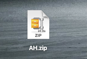
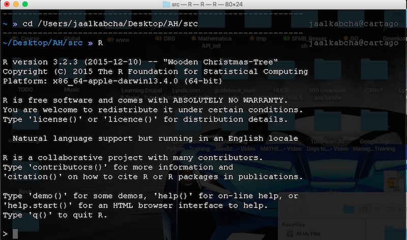

Data harvesting and selection by image features
Table of Contents
Confidential.
In order to overcome in short time period we need human staff Wolf team help with SKUs (stock-keeping ​unit) or product selection by image quality.
Features of images and features are defined and detailed below.
1 Categories
The categories needed are shown in the image. But we will provide a data file with the URL set that will be selected by the team.

This is only for your better understanding.
1.1 Specific categories
The first release of items include the following categories, we will submit the category string in batches to the team. Depending of the packages sizes some categories have better percentage selection. This selection varies from 10% to 45% roughly.
1.1.1 TODO 1-HomeAppliences
1.1.2 TODO 2-Baby
1.1.3 TODO 3-Games
1.1.4 TODO 4-BeautyHealth
1.1.5 TODO 5-Drinks
1.1.6 TODO 6-Toys
1.1.7 TODO 7-KitchenSmallAppliences
1.1.8 TODO 8-Sports (Not include because of lack of items)
2 Image features
- Good quality and resolution
- White background
- Watermarked images are not allowed
- Few people or none is better
- Avoid images with text
- Frames are not allowed
For a final product example you can see the image below:

3 Instructions
3.1 Environment install
3.1.1 Install R
You can obtain from CRAN.
3.1.2 Install R Studio
Download and install from R Studio site.
3.2 Program install
As this program is interpreted by R, we only need to unzip the file named "AH.zip" in your Desktop.

This zip file contain two directories, you will work in the src
directory.
Inside of the src directory will find a dh.R file that is the program.
3.3 Load, customization and execution
- Execute RStudio, then go to
File > Open fileand search forAH > srcdirectory and choose thedh.Rfile. Clickopen. - Customize the
setwdpath according to your computer.
Comment character in R is the #. Un-comment/Comment and adjust as
you need.
- Adjust your variables for the initial SKUs you will select to 1 initially, recommended batches are 150 SKUs per run, this is because the OS limitations for connections available.
The URLSet variable will be part of the file where the current batch
will be saved when you type q after count 150 values from the
initial value, in this example where l = 601 you will press q when
you arrive to 750 SKUs. The you increment both variables.
The next set will be 751 and S18. Obviously you will begin from
1 and S1.
- Please create two accounts in https://login.aliexpress.com/join/buyer/expressJoin.htm, one is for the program:
and the other will be used in the browser when the program call your browser to see the images.
- The next step is setup the
browserpath
adjust according to your operating system.
- Close R Studio
- Open your terminal and a finder window. In the finder window search
for the
AH > src, inTerminalwritecdand space. Then drag and drop yoursrcfolder to yourTerminalapplication, the path will be copied and pressEnter.
- Execute R from Terminal, type
Rand pressEnter.

- Type
source('./dh.R')and pressEnter. Then follow the instructions.

- The program will call to the browser and display the SKU URL.

- Selection
Now you need to decide to accept, reject or quit. Use y or n to
accept or reject the image. When you advance 150 SKUs, press q to
quit and save.
The last warning is not important now. Save, or write where the next batch begin, then adjust the step 3 to the appropriate values with an external text editor (RStudio, Sublime or other).
- Type
q()and pressEnter, do not need to save workspace, then pressnand enter.
- Begin again.
3.4 Data
In the data folder you will see one file generated by run, check each run and data until you feel comfortable with the program.
Given that multiple people will do this task split according to the team
We will supply a new links file links.RData that you must overwrite
in the data folder.
3.5 Questions and issues
You can contact to me in WeChat any time. Please detail your issue and attach some screen-shots to better understanding.
Thank you! Sergio